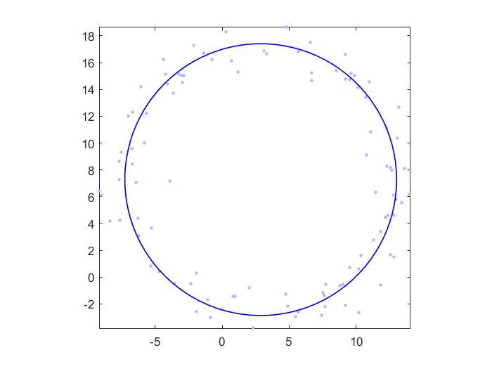
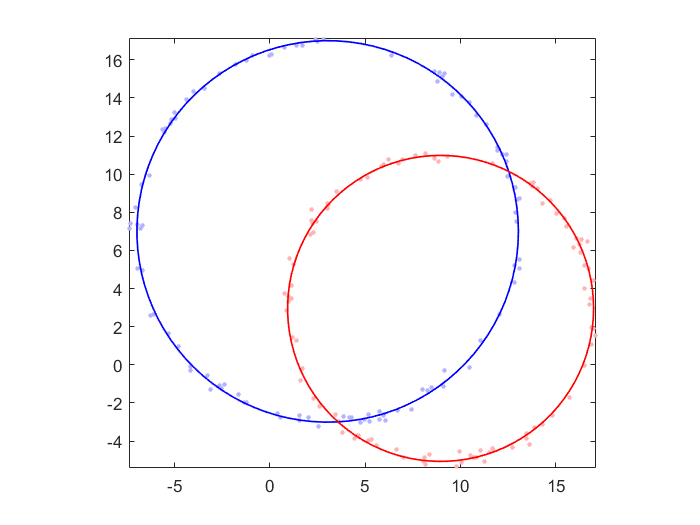
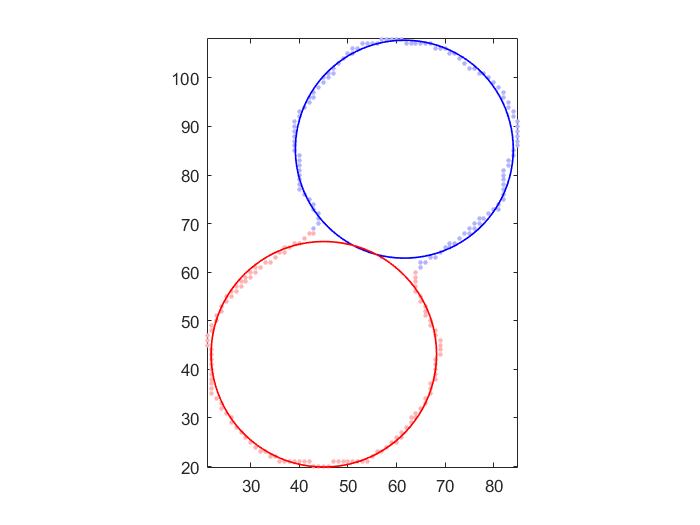

circleFit
Fitting a fixed number of circles in 2D via k-means-like clustering
Contents
Syntax
- [param, assignment, distortion] = circleFit(data, opt, showPlot)
Description
param = circleFit(data, opt, showPlot) returns the parameters of circles after k-means-like clustering, where
- data (2 x dataNum): dataset in 2D to be clustered; where each column is a sample point
- opt.circleNum: number of circles to be identified
- showPlot: 1 for animation if the dimension is 2
- param (3 x circleNum): final parameters of identified circles,
- where each column is the parameters for a circle, with the first two element as coordinates for center and the last element as radius
[center, assignment, distortion] = circleFit(...) also returns assignment of data, where
- assignment: final assignment matrix, with assignment(i,j)=1 if data instance i belongs to circle j
- distortion: values of the objective function (mean of absolute error) during iterations
Example
Example 1: Fitting 1 circle
n=100;
t=rand(n,1)*2*pi;
x=3+10*cos(t)+randn(n,1);
y=7+10*sin(t)+randn(n,1);
data=[x, y]';
opt=circleFit('defaultOpt');
opt.circleNum=1;
figure; param=circleFit(data, opt, 1);
 Example 2: Fitting 2 circels of scattered data
n=100;
t=rand(n,1)*2*pi;
x=3+10*cos(t)+0.2*randn(n,1);
y=7+10*sin(t)+0.2*randn(n,1);
data1=[x, y]';
x=9+8*cos(t)+0.2*randn(n,1);
y=3+8*sin(t)+0.2*randn(n,1);
data2=[x, y]';
data=[data1, data2];
opt=circleFit('defaultOpt');
figure; param=circleFit(data, opt, 1);
Iteration count = 1/200, distortion = 1.703829 Iteration count = 2/200, distortion = 0.375265 Iteration count = 3/200, distortion = 0.148821 Iteration count = 4/200, distortion = 0.148696 Iteration count = 5/200, distortion = 0.148712 Iteration count = 6/200, distortion = 0.148712
Example 3: Fitting 2 circles of image data
im=imread('circleEdge02.png'); [yEdge, xEdge]=find(im); % x and y coordinates of edge data=double([xEdge'; yEdge']); opt=circleFit('defaultOpt'); figure; param=circleFit(data, opt, 1);
Iteration count = 1/200, distortion = 7.869792 Iteration count = 2/200, distortion = 4.436169 Iteration count = 3/200, distortion = 3.624181 Iteration count = 4/200, distortion = 3.320366 Iteration count = 5/200, distortion = 3.168011 Iteration count = 6/200, distortion = 2.987055 Iteration count = 7/200, distortion = 2.776740 Iteration count = 8/200, distortion = 2.403186 Iteration count = 9/200, distortion = 2.010672 Iteration count = 10/200, distortion = 1.336104 Iteration count = 11/200, distortion = 0.608004 Iteration count = 12/200, distortion = 0.565160 Iteration count = 13/200, distortion = 0.565160